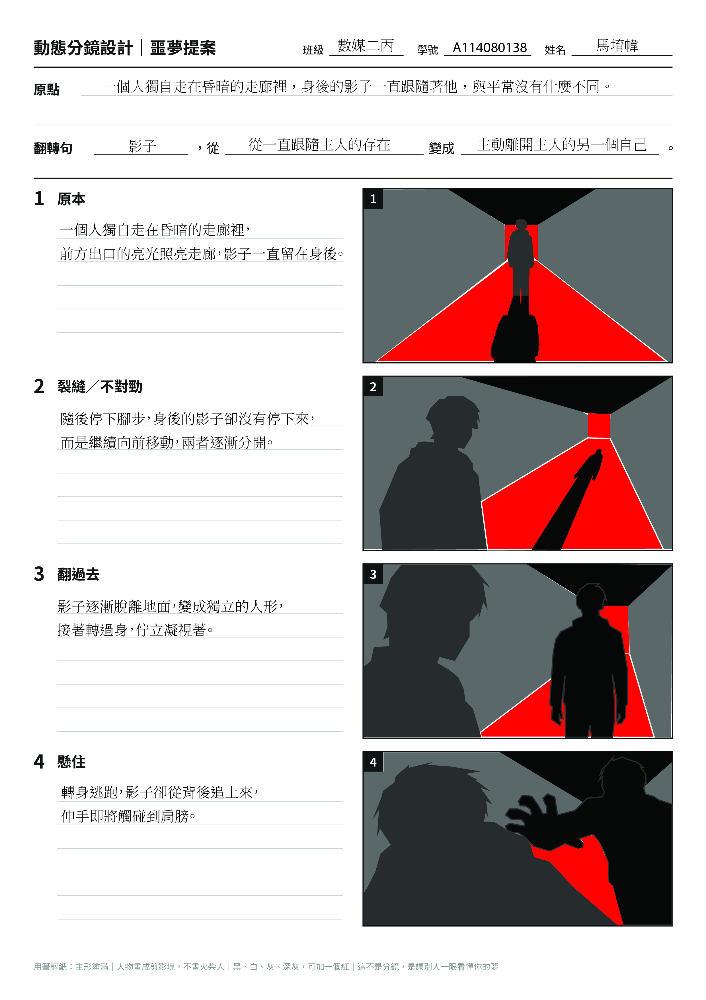
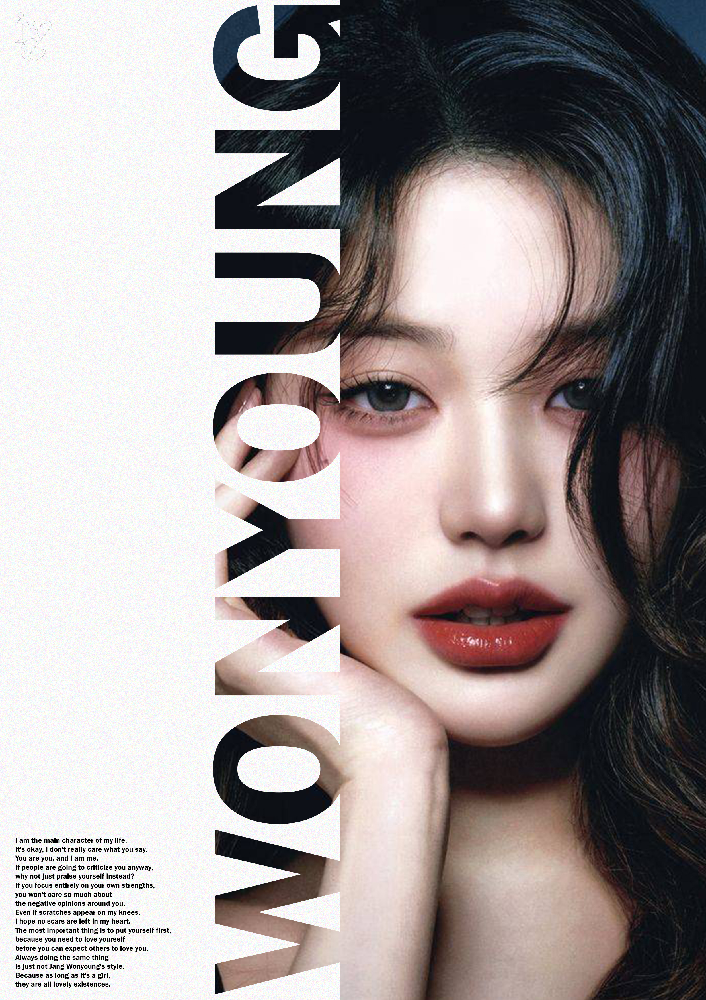
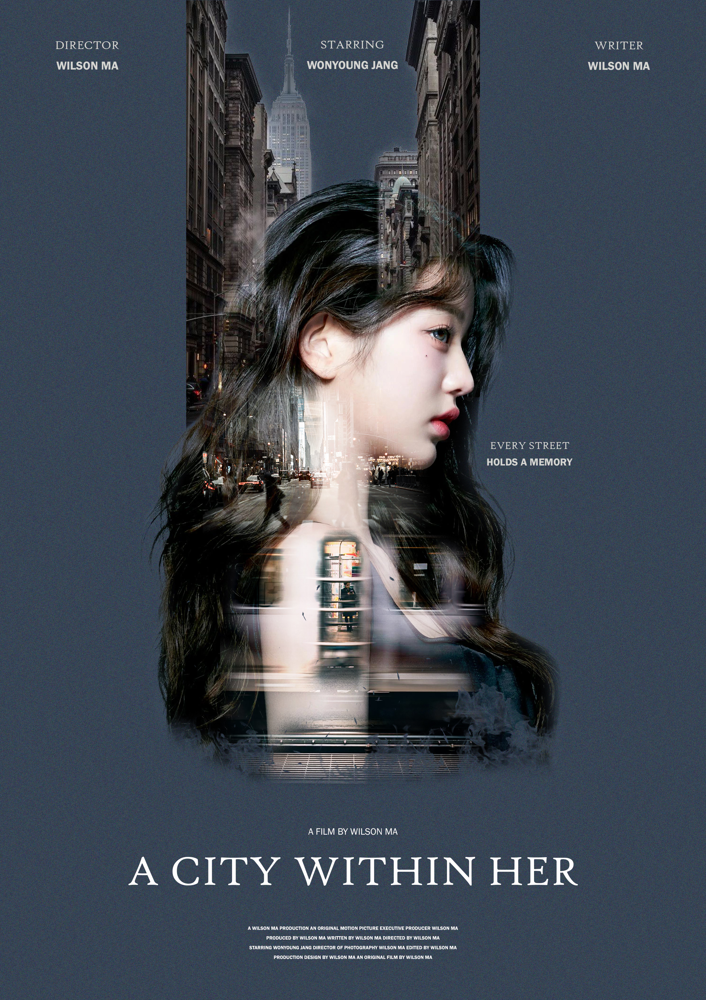

STORYBOARD
動態分鏡設計
《影子不再跟著我》以四格分鏡呈現人物與影子逐漸分離、轉變的故事。
您好！我是馬堉幃，目前就讀於數位多媒體設計學系， 對視覺設計、平面設計及網頁設計有濃厚興趣。 在學習過程中，我接觸了不同類型的視覺設計課程， 目前具備 Adobe Illustrator（AI）及 Adobe Photoshop（PS）的基礎操作能力， 能運用相關軟體進行圖像編輯、視覺設計及版面編排。 過去曾完成動態分鏡設計、海報創意發想、 文字排版視覺化及雙重曝光技法等課程作品。 這些經驗讓我逐漸培養對畫面構成、視覺層次、 色彩搭配及設計細節的觀察能力。 除了目前所學的數位多媒體設計， 我也對室內設計、建築設計及工程領域抱有興趣， 希望未來能進一步了解空間規劃、建築結構與設計實務， 探索視覺創意與空間設計之間的結合。 我期許自己持續累積設計經驗， 拓展不同領域的專業知識， 培養跨領域思考與實作能力。
學習數位媒體與視覺設計相關知識， 透過課程作業累積設計與創作經驗。
透過分鏡規劃練習畫面安排與故事呈現， 思考鏡頭遠近、畫面構圖及動作之間的連貫性。
從主題發想出發，嘗試運用圖像、 色彩與文字組合，呈現海報的視覺主題。
練習文字與視覺元素的結合， 透過字體、大小、間距及排列方式， 強化版面的閱讀層次與視覺效果。
嘗試使用雙重曝光的影像處理方式， 將不同影像元素結合， 探索影像疊合與視覺意象的表現。
目前熟悉並持續練習的設計工具：
具備基礎操作能力，可用於圖像及平面設計。
具備基礎操作能力，可用於影像編輯及視覺處理。
目前尚無正式獎項或專業證照。未來將持續累積課程作品與設計實作經驗，並以參與相關競賽及取得專業證照為目標。
我對視覺設計、平面設計及網頁設計有興趣， 喜歡觀察不同作品的構圖、色彩與排版方式， 並嘗試將不同的創意想法運用在自己的作品中。
此外，我也對室內空間與建築設計感到好奇， 喜歡探索空間配置、建築外觀及設計美感。
未來希望能進一步探索室內設計、 建築設計及工程相關領域， 學習空間規劃、設計表現與相關實務知識。
我期望結合目前所學的視覺設計能力， 拓展跨領域的專業技能， 逐步建立自己的設計思考與實作能力， 為未來的職涯發展累積基礎。
整理視覺設計、影像合成與故事分鏡作品，記錄每一次創作與嘗試。

《影子不再跟著我》以四格分鏡呈現人物與影子逐漸分離、轉變的故事。

運用字體、留白與明暗層次，呈現安靜且具有空間感的展覽視覺。

結合字體、線條與幾何造形，透過交錯與重疊建立畫面的節奏。

以貓咪為主題，結合空間透視、影像合成與文字配置，營造趣味視覺。

運用大型文字與人物影像的比例、位置及層次，建立鮮明的視覺焦點。

透過字體變化、圖形線條與色彩配置，探索文字的圖像化表現。

將人物與城市街景融合，以雙重曝光手法呈現人物與城市之間的連結。